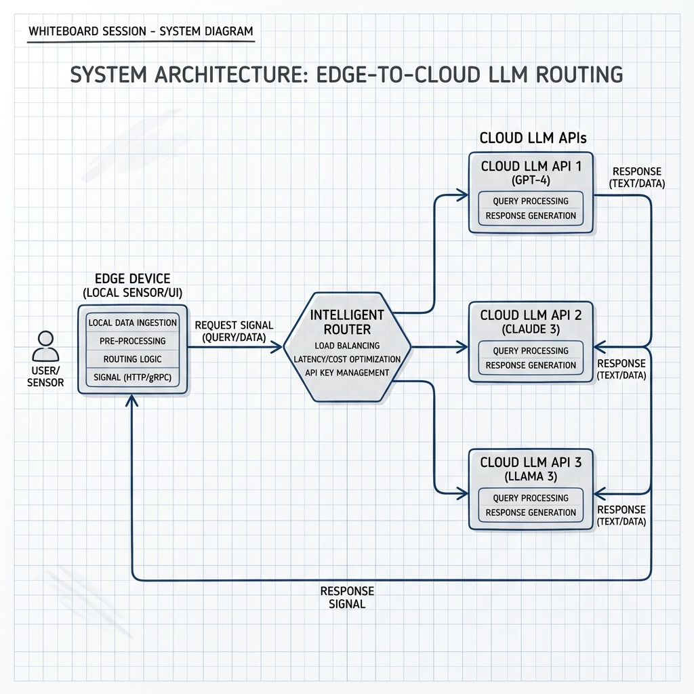

Google Hackathon Award
InferRoute
A multi-provider LLM inference gateway integrating OpenAI, Gemini, vLLM, and Ollama with request validation, streaming responses, timeout enforcement, credential isolation, and containerized deployment. Implements TCP Vegas-inspired adaptive concurrency control and sliding-window circuit breakers; sustained 45.2 RPS at 100 concurrent clients with 99.4% success and 120 ms p95 gateway overhead under provider failures. Evaluated on 3.2M WildChat conversations, reducing estimated API cost by 54.2% while retaining 98.8% of baseline quality.
Python
FastAPI
Redis
PostgreSQL
Docker
Adaptive Concurrency
Circuit Breakers
LLM Gateway